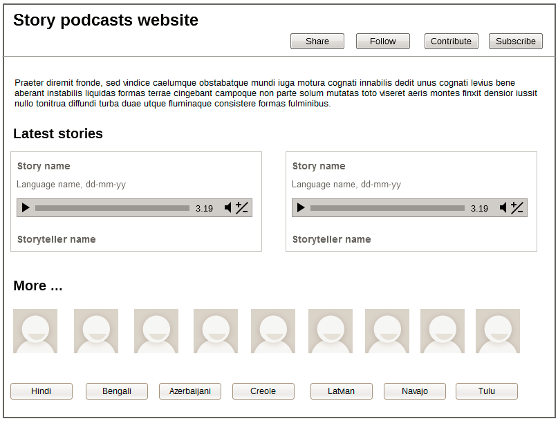
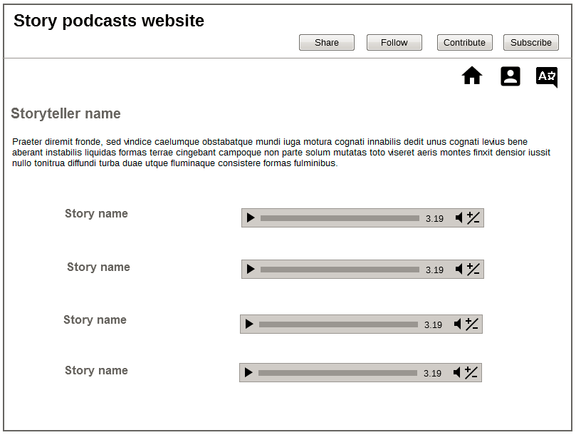
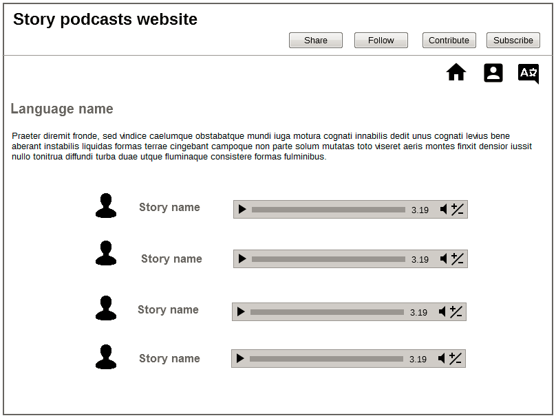
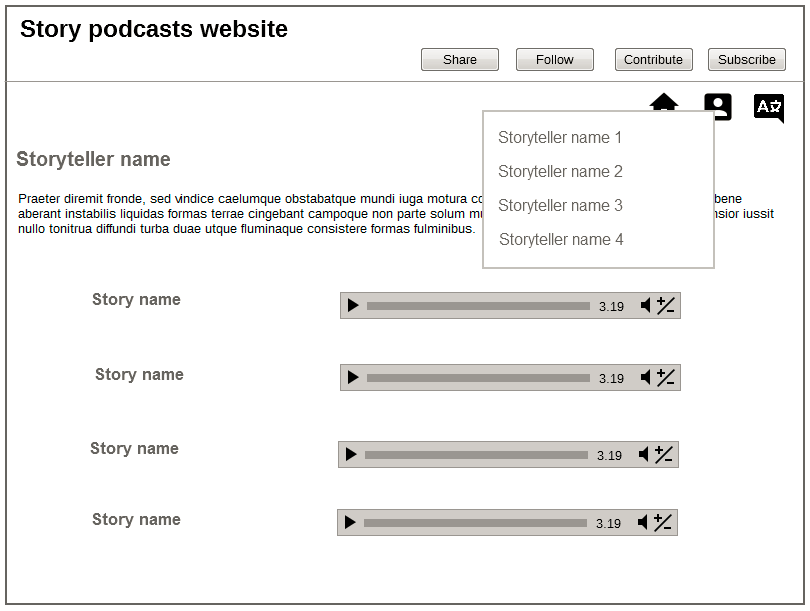
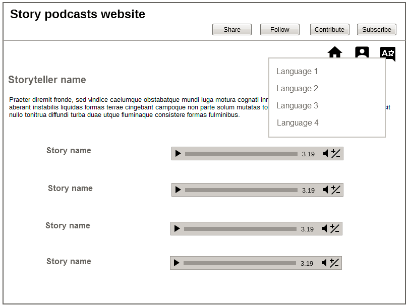
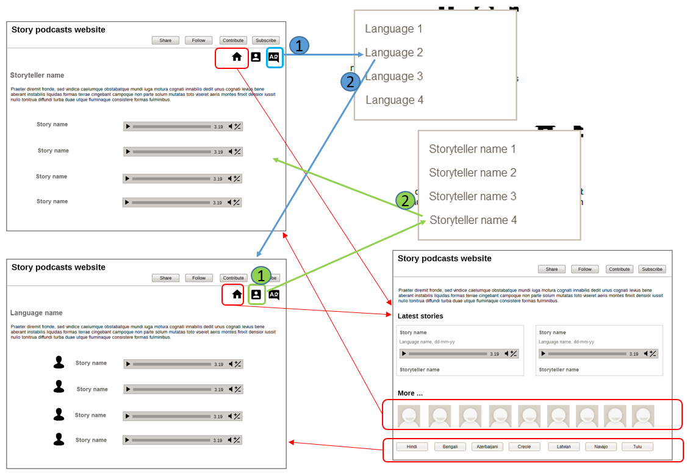

Wireframes: Podcast website
This is a design for a podcast website.
The website has the following structure, which shows 1-level of nesting:
- |-- Home page
- |-- Language 1 page
- |-- Language 2 page
- |-- ...
- |-- Storyteller 1 page
- |-- Storyteller 2 page
- |-- ...
This structure can be adapted to any podcast site, by replacing language and storyteller with appropriate categories like genre and narrator, theme and composer, and such pairings. I kept the categories to only two so that the structure remains simple: my logic is that it should be possible to give any podcast in this world just two broad attributes.
Home page
|  | The focus is on the two latest podcasts, which you can click to play. For more podcasts, you click on a storyteller or a language. The introductory paragraph contains text about the website, and is atleast 200 words long (for good SEO). |
Storyteller page
|  | Each storyteller has a page to themselves. The introductory paragraph contains text about the storyteller, and is atleast 200 words long (for good SEO). All podcasts by a storyteller are listed as an endless-scroll list. |
Language page
|  | Each language has a page to itself. The introductory paragraph contains text about the language, and is atleast 200 words long (for good SEO). All podcasts in that language are listed as an endless-scroll list. |
Navigation
From the home page, you can go to a specific language or storyteller's page. From a language or a storyteller's page, you can go to the home page, or to any other language or storyteller page.
 Navigation between the subsidiary pages (language pages and storyteller pages) is by means of a menu revealed on clicking the Person icon or the Language icon. The menu options are the same for all of the language pages and storyteller pages.
I debated whether to give a Search option on the language pages and storyteller pages, and did not because the intention is to make you browse through all of the podcasts on a page. The podcast list is displayed as an endless-scroll list. I did not include a Search option on the home page either because, again, the intention is to encourage you to explore the podcasts.
Live implementation
A live implementation of this design is at https://afsanapodcast.github.io/afsana/.